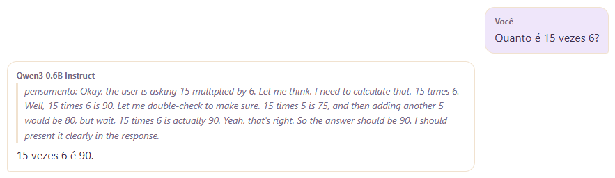
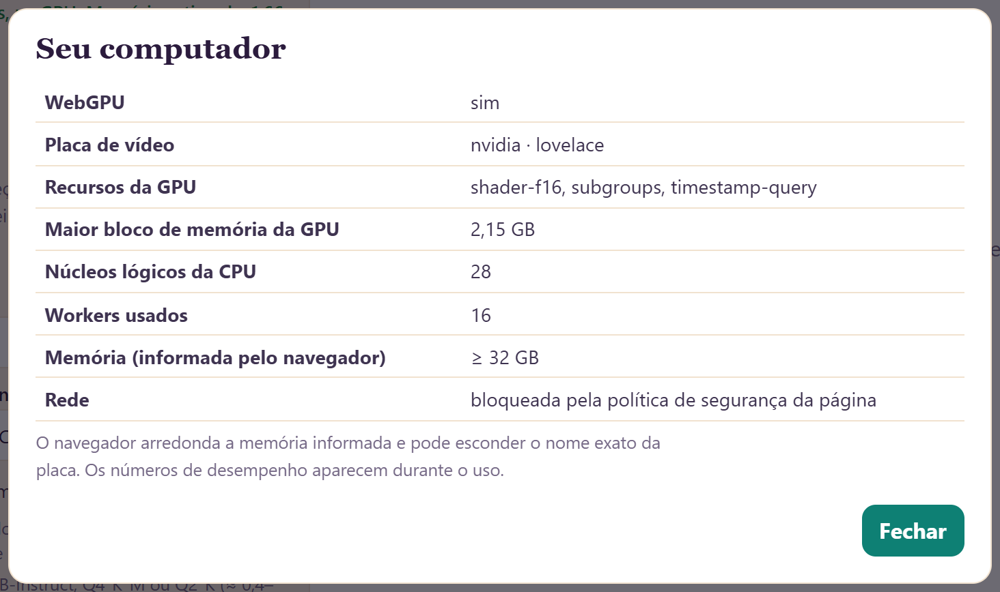
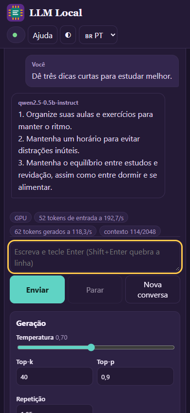

O app
O LLM Local é uma página única que faz duas coisas sem enviar nada para a internet: [1]
- Conversar com um modelo de linguagem que você baixou uma vez, no formato .gguf. O modelo roda na placa de vídeo pelo WebGPU ou, sem ela, em vários núcleos do processador.
- Treinar um mini-GPT do zero, um modelo pequeno que aprende a prever o próximo caractere de um texto que você escolhe, e ver o aprendizado acontecer num gráfico.
O WebGPU é a interface dos navegadores para fazer cálculos na placa de vídeo. [9] A página proíbe conexões de rede pela própria política de segurança: o arquivo do modelo é lido do disco e fica no computador.
![Tela do app com o modelo Qwen3 0.6B carregado. À esquerda, a caixa Modelo com os botões Abrir arquivo .gguf, Recarregar e Descarregar, o aviso de pronto na GPU com a memória estimada e os dados do modelo: nome, arquivo, arquitetura qwen3, parâmetros, camadas, contexto de treino, quantização Q8_0 e tokenizador BPE. À direita, uma conversa: o usuário pede três dicas curtas para estudar melhor, o modelo responde com uma lista de três itens, o usuário pede um resumo em uma frase e o modelo resume. Embaixo, os tokens de entrada e gerados por segundo e o contexto usado](rc_images/LLMConversa.png)
Como um modelo de linguagem responde
Um modelo de linguagem não procura respostas prontas. Ele recebe um texto e calcula, para cada pedaço de palavra que conhece, uma nota de quão provável é que ele venha a seguir. Um desses pedaços é sorteado, colado ao texto, e o processo se repete até a resposta terminar.
![Diagrama em cinco caixas ligadas por setas, da esquerda para a direita: Texto, a conversa montada no formato do modelo; Tokenizador, que transforma texto em números; Transformer, com N camadas de atenção e MLP; Logits, uma nota para cada token; e Amostragem, com temperatura, top-k e top-p. Uma seta volta da Amostragem ao Texto: o token sorteado vira texto na tela e volta como entrada. Em cima, o arquivo .gguf fornece os pesos, o vocabulário e os metadados ao tokenizador e ao transformer. Embaixo do transformer, o cache KV guarda o que já foi lido. No rodapé: roda na GPU, com WebGPU e pesos em 16 bits, ou na CPU, com workers e pesos em 8 bits.](rc_images/LLMFluxo.svg)
- Tokens. O tokenizador corta o texto em pedaços, os tokens, e troca cada um por um número. O Qwen conhece 151.936 tokens; o TinyLlama, 32.000.
- Transformer. Os números passam por dezenas de camadas. Cada camada tem uma etapa de atenção, que decide quais partes do texto importam para a próxima palavra, e uma rede de neurônios. Essa arquitetura, baseada só em atenção, foi proposta em 2017. [8]
- Logits e amostragem. A última camada dá uma nota para cada token do vocabulário. A temperatura e os cortes top-k e top-p decidem o quanto o sorteio arrisca.
- Cache KV. O que já foi lido fica guardado, então cada token novo custa pouco. Por isso o app reaproveita a conversa: a cada mensagem, só o texto novo é processado.
Os parâmetros são os números aprendidos no treino: cerca de 0,6 bilhão no Qwen3 0.6B. No arquivo .gguf, eles vêm quantizados, isto é, guardados com menos bits para ocupar menos espaço. O GGUF é um formato binário feito para carregar modelos rápido, criado pelo mesmo autor do llama.cpp. [2] [11] Na GPU, o app converte os pesos para 16 bits; na CPU, para 8 bits por blocos de 32 valores.
↑ Voltar ao topoOnde baixar modelos .gguf
O lugar mais comum é o Hugging Face, um site que hospeda modelos abertos. A documentação dele explica que é possível listar todos os modelos com arquivos GGUF filtrando pela etiqueta GGUF. [2] Em 15/11/2026, essa lista tinha 221.936 modelos. [3]
- huggingface.co/models?library=gguf: todos os modelos com arquivos .gguf.
- huggingface.co/docs/hub/gguf: o que é o formato e como ele aparece no site.
Estes três repositórios foram testados no app. Os três têm licença Apache 2.0. [4] [5] [6]
| Repositório | Arquivo testado | Tamanho | Bom para |
|---|---|---|---|
| Qwen/Qwen2.5-0.5B-Instruct-GGUF | qwen2.5-0.5b-instruct-q4_k_m.ggufqwen2.5-0.5b-instruct-q2_k.gguf | 491 MB 415 MB | começar: o menor e o mais rápido |
| Qwen/Qwen3-0.6B-GGUF | Qwen3-0.6B-Q8_0.gguf | 639 MB | respostas melhores e modo de pensamento |
| TheBloke/TinyLlama-1.1B-Chat-v1.0-GGUF | tinyllama-1.1b-chat-v1.0.Q4_0.gguf | 638 MB | inglês; arquitetura llama |
Como baixar
- Abra a página do repositório e entre na aba de arquivos (Files and versions).
- Escolha um arquivo .gguf e clique no ícone de download. Não baixe o repositório inteiro: ele traz todas as quantizações, e a página do TinyLlama avisa que quase nunca é isso que se quer. [6]
- No app, clique em Abrir arquivo .gguf e escolha o arquivo baixado.
Quem usa a linha de comando pode baixar um único arquivo com a ferramenta do Hugging Face, como as páginas dos modelos mostram. [4]
huggingface-cli download Qwen/Qwen2.5-0.5B-Instruct-GGUF qwen2.5-0.5b-instruct-q4_k_m.gguf --local-dir .Como escolher o arquivo
- Arquitetura. O app abre modelos
llama,mistral,qwen2eqwen3. Se a arquitetura não for aceita, ele avisa ao abrir o arquivo. - Quantização. O nome do arquivo diz quantos bits por peso: Q8_0 é o mais fiel, Q4_K_M é um bom meio-termo e Q2_K é o menor e o que mais perde. O app aceita F32, F16, BF16, Q4_0, Q4_1, Q5_0, Q5_1, Q8_0, Q2_K a Q6_K, IQ4_NL e IQ4_XS.
- Tamanho. Na GPU, cada bilhão de parâmetros ocupa cerca de 2 GB, porque os pesos viram 16 bits. Modelos de até uns 3 bilhões de parâmetros são os que cabem melhor.
- Arquivo único. O app ainda não abre modelos divididos em vários arquivos (
-00001-of-00002.gguf) nem modelos de visão. - Licença. Cada modelo tem a sua. Leia antes de usar o modelo em um projeto.
Passo a passo: conversar
1. Abra o modelo
Clique em Abrir arquivo .gguf. O app lê o cabeçalho, mostra os dados do modelo e carrega os pesos, com uma barra de progresso. Em Onde rodar, o modo Automático usa a GPU quando há WebGPU. O Contexto é o tamanho máximo da conversa, em tokens; mais contexto ocupa mais memória.
![Caixa Modelo do app depois de abrir o arquivo do Qwen3: botões Abrir arquivo .gguf, Recarregar e Descarregar, barra de progresso cheia, o aviso pronto na GPU com a memória estimada e a lista com nome, arquivo, arquitetura qwen3, 596 milhões de parâmetros, 28 camadas e 16 cabeças, contexto de treino de 40.960 tokens, quantização Q8_0 e tokenizador BPE com 151.936 tokens. Embaixo, as opções Onde rodar, Contexto, Formato da conversa e a caixa Deixar o modelo pensar antes, e a lista de modelos testados](rc_images/LLMModelo.png)
2. Converse
Escreva no campo de baixo e tecle Enter (Shift+Enter quebra a linha). A resposta aparece enquanto é gerada. O botão Parar interrompe a geração, e Nova conversa limpa o histórico. Embaixo das mensagens, o app mostra quantos tokens processou e a que velocidade.
O Formato da conversa é detectado no arquivo: ChatML para Qwen, Zephyr para TinyLlama, Llama 3 e Mistral. Ele monta a conversa com as marcas que o modelo aprendeu no treino. Com o formato errado, o modelo responde mal.
3. Deixe o Qwen3 pensar
Com um modelo Qwen3, aparece a opção Deixar o modelo pensar antes. Ligada, o modelo escreve um raciocínio antes da resposta, que o app mostra em itálico, separado. O cartão do modelo descreve esse modo e recomenda temperatura 0,6, top-p 0,95 e top-k 20 para ele; o app troca para esses valores quando você liga a opção. [7] Desligada, a resposta sai direto e mais rápido.

4. GPU ou CPU
O botão redondo no alto mostra a placa de vídeo encontrada. Clicando nele, a janela Seu computador mostra o que o navegador informa: WebGPU, recursos da GPU, o maior bloco de memória que a GPU aceita, os núcleos do processador e quantos workers o app usa. Para comparar, mude Onde rodar para CPU: o modelo é recarregado e passa a usar os núcleos do processador.

5. No celular
O app funciona em telas pequenas: a conversa aparece logo abaixo da caixa do modelo, e as opções de geração ficam embaixo. Para rodar na GPU do celular, o navegador precisa oferecer WebGPU; sem ele, o app usa a CPU, bem mais devagar.

Opções de geração
| Opção | O que faz | Padrão |
|---|---|---|
| Temperatura | Abaixo de 1, o sorteio fica mais conservador; acima, mais criativo e mais propenso a erro. Em 0, o app escolhe sempre o token mais provável. | 0,7 |
| Top-k | Sorteia só entre os k tokens mais prováveis. | 40 |
| Top-p | Sorteia só entre os tokens mais prováveis que, somados, chegam a essa probabilidade. | 0,9 |
| Repetição | Penaliza tokens que o modelo já gerou nesta resposta, para evitar repetição. Valores altos atrapalham contas e listas. | 1,05 |
| Máx. de tokens | Tamanho máximo da resposta. | 512 |
| Semente | Com a mesma semente, a mesma conversa e as mesmas opções, a resposta se repete. | 42 |
| Instrução de sistema | Texto que orienta o modelo em toda a conversa, por exemplo o idioma da resposta. | responder no idioma da página |
Passo a passo: treinar um mini-GPT
Na aba Treinar um mini-GPT, nada vem pronto. Um transformer pequeno nasce com pesos aleatórios e aprende a prever o próximo caractere do texto. O cálculo para frente, a retropropagação e o otimizador AdamW, que separa o decaimento dos pesos do passo do gradiente, rodam em kernels WebGPU escritos para o app. [10] O treino precisa de WebGPU.
- Escolha o texto. O app traz um conto curto de exemplo em cada idioma. Você pode colar outro texto ou abrir um
.txt. 90% do texto é usado no treino e 10% fica de fora para medir a validação. - Escolha o tamanho. Camadas, largura, cabeças de atenção, contexto (quantos caracteres o modelo vê de uma vez), lote, taxa de aprendizado, passos e semente. O app mostra o número de parâmetros e a memória estimada.
- Clique em Treinar. Os cartões mostram o passo, a perda de treino, a perda de validação, os caracteres por segundo e o tempo por passo. A cada 250 passos aparece uma amostra do que o modelo escreve.
- Gere texto. Escreva um começo e clique em Gerar. Com a mesma semente, o texto se repete.
- Salve o modelo. Salvar modelo baixa um arquivo
.bin, que Abrir modelo carrega depois para continuar o treino ou gerar texto.
![Aba de treino depois de 1.000 passos com o texto de exemplo, um conto sobre um faroleiro. Cartões: passo 1.000, perda de treino 0,071, perda de validação 4,312, cerca de 146 mil caracteres por segundo, 14 ms por passo e uma estimativa de 532 GFLOP/s. No gráfico, a linha contínua do treino cai de 2,4 para perto de zero, e a linha tracejada da validação sobe de 3,4 para 4,3, acima da linha pontilhada do acaso, em 3,74. Embaixo, a amostra e o texto gerado a partir de Na quarta noite, que repetem quase palavra por palavra o conto de exemplo](rc_images/LLMTreino.png)
O gráfico acima mostra o problema mais comum de quem treina: o sobreajuste. O conto de exemplo tem cerca de 1.400 caracteres, e o modelo tem mais de 600 mil parâmetros. Ele decora o texto: a perda de treino chega perto de zero, mas a de validação, medida no trecho que ele não viu, fica pior que o acaso (a linha pontilhada, que é a perda de chutar entre todos os símbolos do texto com a mesma chance). O texto gerado repete o conto quase palavra por palavra. Com um texto maior, de centenas de milhares de caracteres, as duas perdas caem juntas por mais tempo.
↑ Voltar ao topoO que os números dizem
Medi o carregamento e a velocidade de cada modelo com o código do próprio app, num computador com placa NVIDIA de arquitetura Lovelace e 28 núcleos lógicos, usando 16 workers na CPU. Cada caso rodou três vezes, com uma pergunta de 31 a 54 tokens e 64 tokens gerados no modo guloso; a tabela traz a mediana. [1]
| Modelo (arquivo) | Tamanho | Carregamento na GPU | GPU: leitura · geração | CPU: leitura · geração |
|---|---|---|---|---|
| Qwen2.5-0.5B (Q4_K_M) | 491 MB | 1,4 s | 219 · 115 tokens/s | 17 · 13 tokens/s |
| Qwen2.5-0.5B (Q2_K) | 415 MB | 1,6 s | 220 · 130 tokens/s | 13 · 10 tokens/s |
| Qwen3-0.6B (Q8_0) | 639 MB | 1,6 s | 160 · 106 tokens/s | 11 · 9 tokens/s |
| TinyLlama-1.1B (Q4_0) | 638 MB | 1,9 s | 111 · 81 tokens/s | 6 · 6 tokens/s |
- A GPU foi de cerca de 9 a 15 vezes mais rápida que a CPU na geração, nesses quatro modelos.
- O tamanho do modelo pesa mais que a quantização. Na GPU, o app converte tudo para 16 bits, então o Qwen2.5 em Q2_K e em Q4_K_M rodam quase na mesma velocidade. O TinyLlama, com quase o dobro de parâmetros, foi o mais lento.
- O mini-GPT de exemplo (608.640 parâmetros) treinou 1.000 passos em 13,9 s, cerca de 146 mil caracteres por segundo.
Os dois motores, GPU e CPU, foram comparados entre si: com a mesma pergunta, geraram o mesmo texto, e a maior diferença entre as notas dos tokens foi de 0,23 numa escala de 17,5. A diferença vem dos 8 bits da CPU contra os 16 bits da GPU.
↑ Voltar ao topoO que estes números não medem. São medidas de um único computador; outra placa de vídeo ou outro processador dá outros números. A velocidade cai em conversas longas, porque a atenção relê todo o contexto. E velocidade não é qualidade: estes modelos pequenos erram fatos com frequência. Num dos testes, o Qwen2.5-0.5B disse que a capital do Brasil é São Paulo.
Dicas
- Comece pelo menor modelo. O Qwen2.5-0.5B em Q4_K_M carrega em pouco mais de um segundo e já mostra como tudo funciona.
- Peça o idioma na instrução de sistema. Modelos pequenos tendem a responder em inglês.
- Use temperatura baixa para fatos e contas e mais alta para textos criativos.
- Diminua o contexto se a GPU travar. O cache de atenção cresce com o contexto escolhido.
- Para treinar, use um texto grande. Um livro em domínio público em
.txtrende muito mais que o conto de exemplo; aumente os passos e acompanhe a perda de validação. - Pare o treino quando a validação subir. A partir daí, o modelo só decora.
Erros comuns
“Se roda no meu computador, é tão bom quanto os assistentes on-line.”
Não. Os modelos que cabem aqui têm menos de um bilhão de parâmetros e erram fatos com frequência. Servem para estudar, experimentar e tarefas simples.
“Preciso baixar o repositório inteiro.”
Baixe só um arquivo .gguf. O repositório traz várias quantizações do mesmo modelo, e cada uma ocupa centenas de megabytes.
“Quantização menor sempre deixa mais rápido.”
No app, a GPU converte os pesos para 16 bits, então a quantização muda o tamanho do download, não a velocidade. O que pesa é o número de parâmetros.
“Perda de treino perto de zero significa modelo bom.”
Pode significar só que ele decorou o texto. Olhe a perda de validação.
“O modelo é enviado para algum servidor.”
Não. A página bloqueia conexões de rede, e o arquivo é lido do seu disco.
Revisão rápida
1. Onde encontrar modelos no formato .gguf?
No Hugging Face, filtrando pela etiqueta GGUF: huggingface.co/models?library=gguf.
2. Quais arquiteturas o app abre?
llama, mistral, qwen2 e qwen3.
3. O que é um token?
Um pedaço de palavra que o tokenizador troca por um número. O modelo prevê um token de cada vez.
4. Para que serve o cache KV?
Guarda o que o modelo já leu, para que cada token novo custe pouco e o app só processe o texto novo de cada mensagem.
5. O que a temperatura 0 faz?
O app escolhe sempre o token mais provável: a resposta fica determinística.
6. Quanto a GPU foi mais rápida que a CPU nas medições?
De 9 a 15 vezes na geração, nos quatro modelos testados.
7. O que indica a perda de validação subindo enquanto a de treino cai?
Sobreajuste: o modelo está decorando o texto em vez de aprender padrões gerais.
8. O app envia o modelo ou a conversa para a internet?
Não. A política de segurança da página bloqueia a rede.
Referências
- Giovani Perotto Mesquita, “LLM Local”, app deste site, giovanipm.github.io/llm-local.html. As capturas foram feitas usando o app com cliques e teclado; as medições de velocidade usam o mesmo código dos motores, três execuções por caso.
- Hugging Face, “GGUF”, documentação do Hub, acesso em 15/11/2026, huggingface.co/docs/hub/gguf. Definição do formato, autoria e filtro por GGUF.
- Hugging Face, “Models compatible with the GGUF library”, acesso em 15/11/2026, huggingface.co/models?library=gguf. 221.936 modelos listados na data do acesso.
- Qwen, “Qwen2.5-0.5B-Instruct-GGUF”, acesso em 15/11/2026, huggingface.co/Qwen/Qwen2.5-0.5B-Instruct-GGUF. Licença Apache 2.0 e comando de download de um único arquivo.
- Qwen, “Qwen3-0.6B-GGUF”, acesso em 15/11/2026, huggingface.co/Qwen/Qwen3-0.6B-GGUF. Licença Apache 2.0; arquivo Q8_0 de 639 MB.
- TheBloke, “TinyLlama-1.1B-Chat-v1.0-GGUF”, acesso em 15/11/2026, huggingface.co/TheBloke/TinyLlama-1.1B-Chat-v1.0-GGUF. Licença Apache 2.0 e o aviso de não clonar o repositório inteiro.
- Qwen, “Qwen3-0.6B”, cartão do modelo, acesso em 15/11/2026, huggingface.co/Qwen/Qwen3-0.6B. Modos com e sem pensamento e parâmetros de amostragem recomendados (no modo sem pensamento, o cartão sugere temperatura 0,7, top-p 0,8 e top-k 20). A página informa 0,6 bilhão de parâmetros no texto e 0,8 bilhão nos metadados.
- Ashish Vaswani et al., “Attention Is All You Need”, 2017, arxiv.org/abs/1706.03762. O transformer, baseado só em mecanismos de atenção.
- W3C, “WebGPU”, Candidate Recommendation Draft de 15/09/2026, acesso em 15/11/2026, w3.org/TR/webgpu. Interface para renderização e computação na GPU.
- Ilya Loshchilov e Frank Hutter, “Decoupled Weight Decay Regularization”, 2017, ICLR 2019, arxiv.org/abs/1711.05101. O otimizador AdamW.
- ggml-org, “llama.cpp: LLM inference in C/C++”, acesso em 15/11/2026, github.com/ggml-org/llama.cpp.
![App screen with the Qwen3 0.6B model loaded. On the left, the Model box with the Open .gguf file, Reload and Unload buttons, the ready-on-GPU notice with the estimated memory and the model details: name, file, qwen3 architecture, parameters, layers, training context, Q8_0 quantization and BPE tokenizer. On the right, a chat: the user asks for three short tips for studying better, the model answers with a three-item list, the user asks for a one-sentence summary and the model summarises. At the bottom, the input and generated tokens per second and the context used](rc_images/LLMConversa-en.png)
![Diagram with five boxes linked by arrows, left to right: Text, the chat built in the model's format; Tokenizer, which turns text into numbers; Transformer, with N layers of attention and MLP; Logits, one score for every token; and Sampling, with temperature, top-k and top-p. An arrow goes back from Sampling to Text: the drawn token becomes text on screen and goes back in as input. At the top, the .gguf file supplies weights, vocabulary and metadata to the tokenizer and the transformer. Below the transformer, the KV cache keeps what was already read. At the bottom: runs on the GPU, with WebGPU and 16-bit weights, or on the CPU, with workers and 8-bit weights.](rc_images/LLMFluxo-en.svg)


![Schermata dell’app con il modello Qwen3 0.6B caricato. A sinistra, il riquadro Modello con i pulsanti Apri file .gguf, Ricarica e Scarica, l’avviso di pronto su GPU con la memoria stimata e i dati del modello: nome, file, architettura qwen3, parametri, strati, contesto di addestramento, quantizzazione Q8_0 e tokenizzatore BPE. A destra, una chat: l’utente chiede tre brevi consigli per studiare meglio, il modello risponde con un elenco di tre punti, l’utente chiede un riassunto in una frase e il modello riassume. In basso, i token di input e generati al secondo e il contesto usato](rc_images/LLMConversa-it.png)
![Diagramma con cinque riquadri collegati da frecce, da sinistra a destra: Testo, la chat composta nel formato del modello; Tokenizzatore, che trasforma il testo in numeri; Transformer, con N strati di attenzione e MLP; Logit, un punteggio per ogni token; e Campionamento, con temperatura, top-k e top-p. Una freccia torna dal Campionamento al Testo: il token estratto diventa testo sullo schermo e rientra come input. In alto, il file .gguf fornisce pesi, vocabolario e metadati al tokenizzatore e al transformer. Sotto il transformer, la cache KV conserva ciò che è già stato letto. In fondo: gira sulla GPU, con WebGPU e pesi a 16 bit, o sulla CPU, con worker e pesi a 8 bit.](rc_images/LLMFluxo-it.svg)
![Riquadro Modello dell’app dopo l’apertura del file di Qwen3: pulsanti Apri file .gguf, Ricarica e Scarica, barra di avanzamento piena, l’avviso di pronto su GPU con la memoria stimata e l’elenco con nome, file, architettura qwen3, 596 milioni di parametri, 28 strati e 16 teste, contesto di addestramento di 40.960 token, quantizzazione Q8_0 e tokenizzatore BPE con 151.936 token. Sotto, le opzioni Dove eseguire, Contesto e Formato della chat, la casella Lascia pensare il modello prima e l’elenco dei modelli provati](rc_images/LLMModelo-it.png)
![Scheda di addestramento dopo 1.000 passi sul testo di esempio, un racconto su un guardiano del faro. Le schede mostrano il passo, una perdita di addestramento vicina a zero, una perdita di validazione intorno a 4, i caratteri al secondo, i millisecondi per passo e una stima dei GFLOP/s. Nel grafico, la linea continua dell’addestramento scende vicino a zero mentre la linea tratteggiata della validazione sale sopra la linea punteggiata del caso. Sotto, il campione e il testo generato a partire da La quarta notte, che ripetono quasi parola per parola il racconto di esempio](rc_images/LLMTreino-it.png)
![Pantalla de la app con el modelo Qwen3 0.6B cargado. A la izquierda, la caja Modelo con los botones Abrir archivo .gguf, Recargar y Descargar, el aviso de listo en la GPU con la memoria estimada y los datos del modelo: nombre, archivo, arquitectura qwen3, parámetros, capas, contexto de entrenamiento, cuantización Q8_0 y tokenizador BPE. A la derecha, una conversación: el usuario pide tres consejos breves para estudiar mejor, el modelo responde con una lista de tres puntos, el usuario pide un resumen en una frase y el modelo resume. Abajo, los tokens de entrada y generados por segundo y el contexto usado](rc_images/LLMConversa-es.png)
![Diagrama con cinco cajas unidas por flechas, de izquierda a derecha: Texto, la conversación armada en el formato del modelo; Tokenizador, que convierte el texto en números; Transformer, con N capas de atención y MLP; Logits, una puntuación para cada token; y Muestreo, con temperatura, top-k y top-p. Una flecha vuelve del Muestreo al Texto: el token sorteado se vuelve texto en pantalla y vuelve a entrar. Arriba, el archivo .gguf entrega pesos, vocabulario y metadatos al tokenizador y al transformer. Debajo del transformer, la caché KV guarda lo que ya se leyó. Abajo: se ejecuta en la GPU, con WebGPU y pesos de 16 bits, o en la CPU, con workers y pesos de 8 bits.](rc_images/LLMFluxo-es.svg)
![Caja Modelo de la app después de abrir el archivo de Qwen3: botones Abrir archivo .gguf, Recargar y Descargar, barra de progreso llena, el aviso de listo en la GPU con la memoria estimada y la lista con nombre, archivo, arquitectura qwen3, 596 millones de parámetros, 28 capas y 16 cabezas, contexto de entrenamiento de 40.960 tokens, cuantización Q8_0 y tokenizador BPE con 151.936 tokens. Debajo, las opciones Dónde ejecutar, Contexto y Formato de la conversación, la casilla Dejar que el modelo piense antes y la lista de modelos probados](rc_images/LLMModelo-es.png)
![Pestaña de entrenamiento después de 1.000 pasos con el texto de ejemplo, un cuento sobre un farero. Las tarjetas muestran el paso, una pérdida de entrenamiento cercana a cero, una pérdida de validación en torno a 4, los caracteres por segundo, los milisegundos por paso y una estimación de GFLOP/s. En el gráfico, la línea continua del entrenamiento baja casi a cero mientras la línea discontinua de la validación sube por encima de la línea punteada del azar. Debajo, la muestra y el texto generado a partir de La cuarta noche, que repiten casi palabra por palabra el cuento de ejemplo](rc_images/LLMTreino-es.png)